MUSIC · JUL 23 TO 26 · 2027 · British Columbia
SHAMBHALA
Find each other between the trees.
303days out
- When
- Jul 23 to Jul 26, 2027
- Where
- Salmo River Ranch, British Columbia · Directions
- Light
- After dark
In the mix
With Dane and Drake, who first brought Shambhala into Gordon's life.
First, meet Drake and Mel in Kelowna. Then we go to Shambhala together. Our Farmily: Gordon, Drake, Mel, David Vermillion, Trent, Mason, Myke Bailey and Jacob Ferrufino.
Notes to the crew
Before this night
13 real photographs from Gordon's album that lead here.
{kind=link}
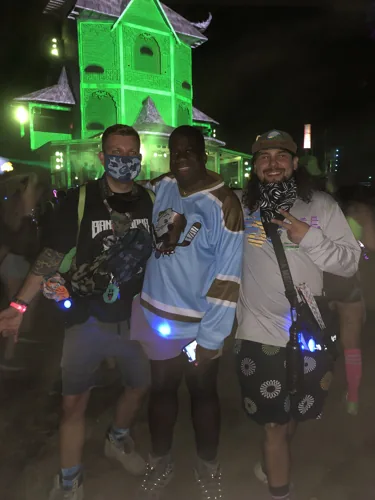
Found each other after dark.Shambhala · July 22, 2023{kind=link}
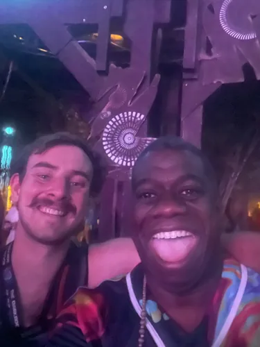
A little of the forest came home with us.Shambhala · July 23, 2023{kind=link}
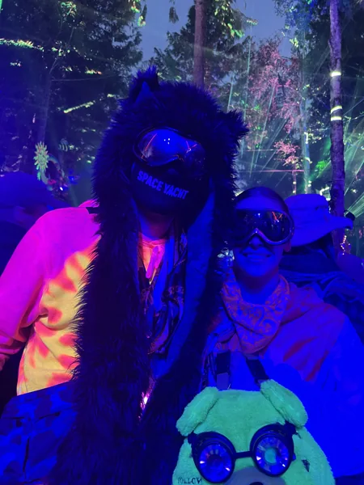
Still glowing at four in the morning.Shambhala · 2022 · July 25, 2022{kind=link}
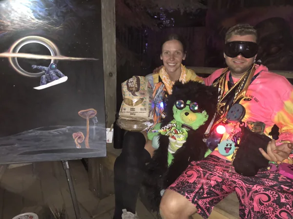
A little strange. A lot of joy.Shambhala · 2022 · July 24, 2022{kind=link}
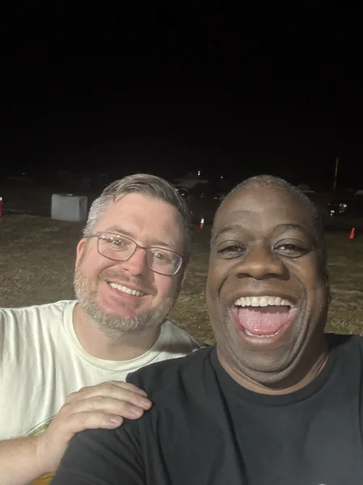
Back where we belong.Shambhala · 2025 · July 24, 2025{kind=link}
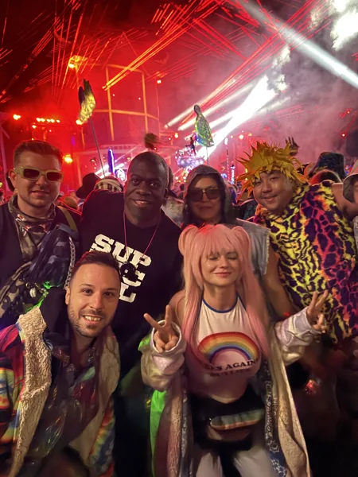
One more reason to stay up.Shambhala · 2025 · July 26, 2025{kind=link}
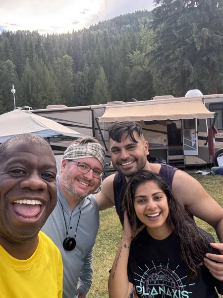
Home for the weekend.Shambhala · 2025 · July 27, 2025{kind=link}
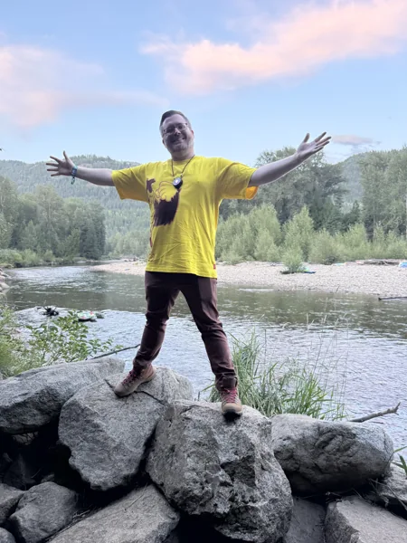
A whole world between sets.Shambhala · 2025 · July 27, 2025{kind=link}
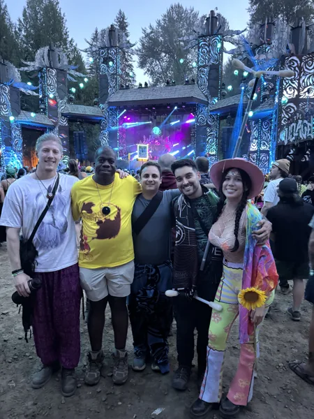
This is the part I keep.Shambhala · 2025 · July 27, 2025{kind=link}
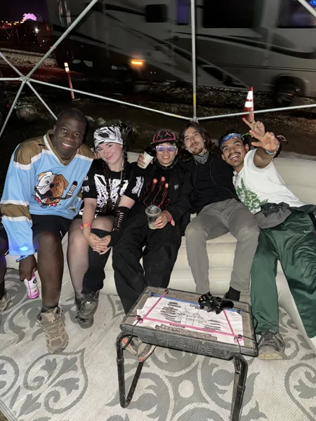
The forest makes room for all of us.Shambhala · 2024 · July 25, 2024{kind=link}
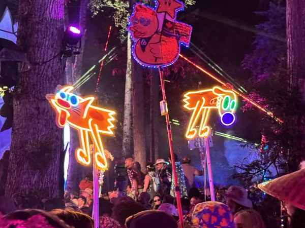
Follow the glow.Shambhala · 2024 · July 27, 2024{kind=link}
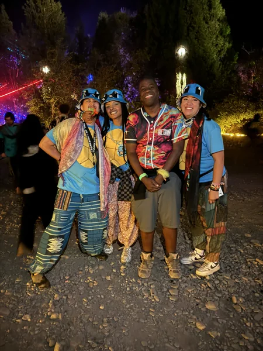
Stay for one more.Shambhala · 2024 · July 28, 2024{kind=link}
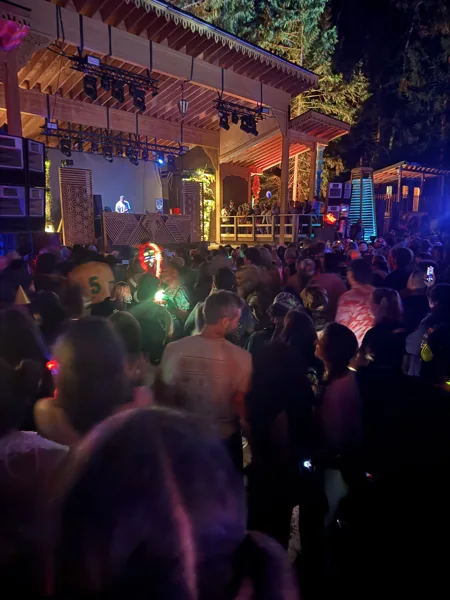
There is always another world to find.Shambhala · 2025 · July 28, 2025Dig into the sound and story
5 short chapters. Open the ones that call to you.
OUR WAY THEREFirst, Kelowna. Then, together.
I’m meeting Drake and Mel in Kelowna, British Columbia, before we head to Shambhala together in 2027. The gathering starts before the gates. Our meeting day and travel details are still to come.
THE ROOTSA farm, a gathering, a feeling that grew.
Shambhala’s own history begins with about 500 people at Salmo River Ranch in 1998, sharing local art and music. It grew through word of mouth. The festival still describes its community as the Farmily, a name that keeps the people at the center.
SIX WORLDSChoose a place, not just a name.
The AMP, Fractal Forest, The Grove, The Living Room, The Pagoda and The Village are six distinct stages. Their separate visual and musical personalities make exploration part of the festival: you can follow a place’s feeling before you know who is playing.
OUR NEXT CHAPTEREight lights, each one belongs.
Gordon, Drake, Mel, David Vermillion, Trent, Mason, Myke Bailey and Jacob Ferrufino: eight people in our planned 2027 Farmily. Travel and camping are their own decisions; this page keeps the part that matters here, the chance to make the adventure together.
THE THREADSomeone opens a door. You hold it open.
The invitation in this collection is to bring a discovery back to someone. A different stage, an artist they have not heard, a place to pause. That small act is how a shared adventure becomes more than eight separate itineraries.
Before we go
Artist recordings open on their own players. Not a promised setlist.
Same crew, other nights
Swipe the picture, or use the arrow keys, for the next night.